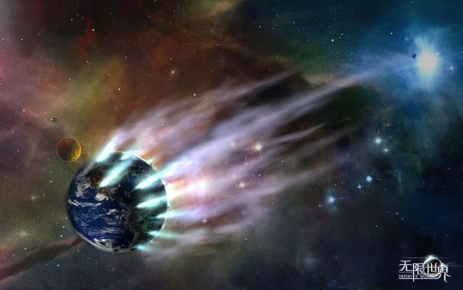

- 2019-02-07 周四
- 短文
下无剧透
今天赶早去电影院看了《流浪地球》，是我非常喜欢的星际题材科幻。
几年前也是去电影院看了《星际穿越》，它宏大的宇宙背景让我打开了新世界的大♂门。《星际穿越》是一部典型的西方价值观的科幻片，大体上就是造宇宙飞船，让一部分人逃离。
而《流浪地球》明显更偏向于中式。评论两极分化严重，我认为这部科幻虽然有一些设定上的漏洞，但是瑕不掩瑜，可以说是现代中国硬科幻的起步之作，能算作里程碑。想象力也十分丰富，最后问题的解决非常燃。相比于只有几个人去拯救世界，我觉得更多人团结起来共同改变全人类的命运更让人感动，人多力量大不是没有道理。
中国特效水平能做到如此震撼也是很感人了。虽然比好莱坞还有不小的差距，但也看到了进步。希望以这部电影为始，中国科幻能有更大的发展。
难得安利一下
